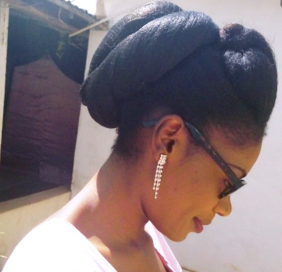
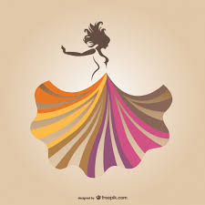
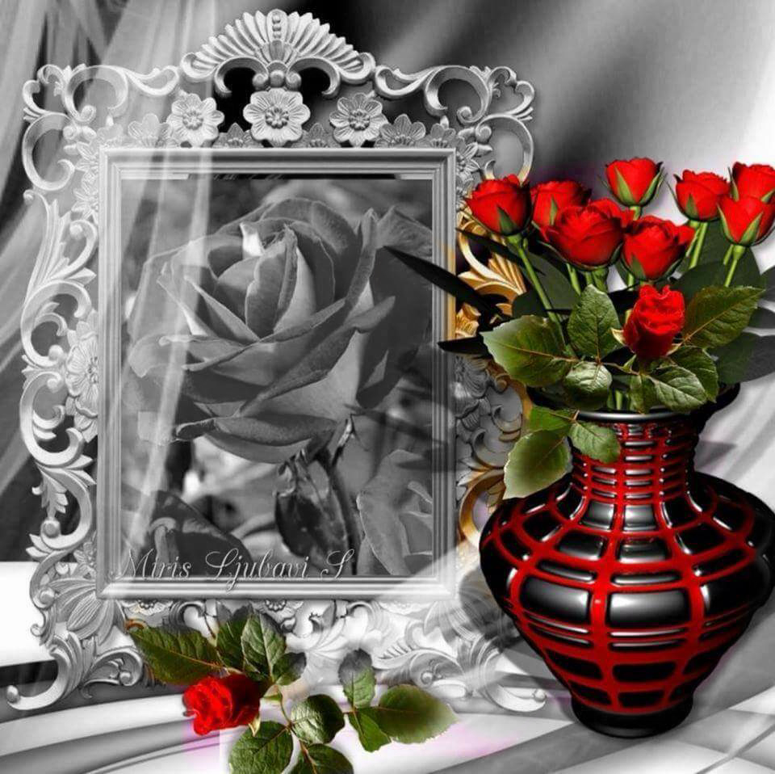
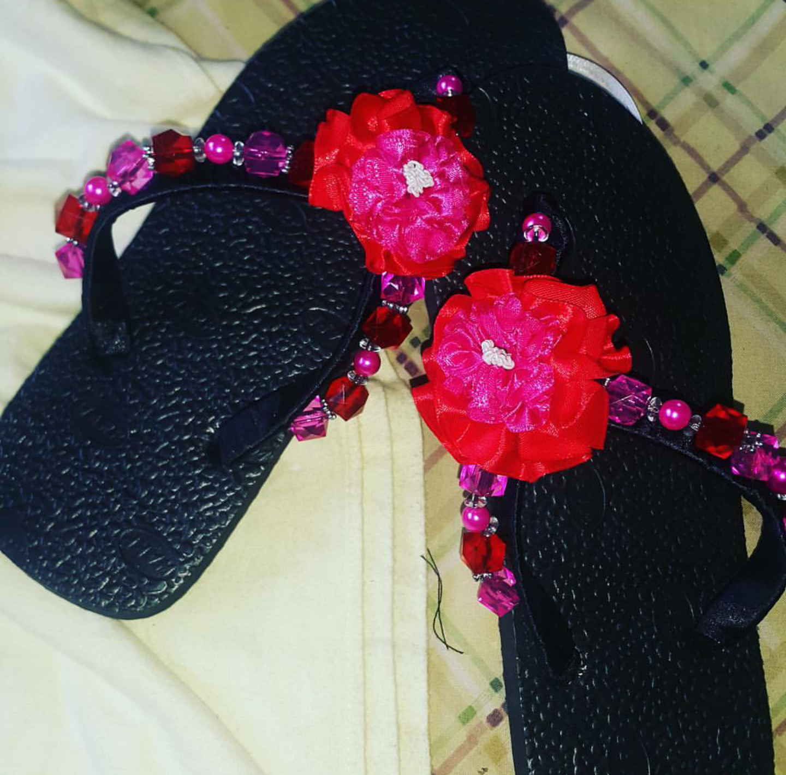
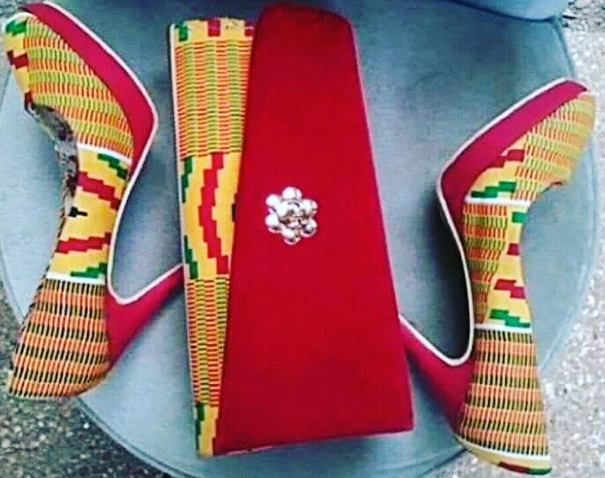
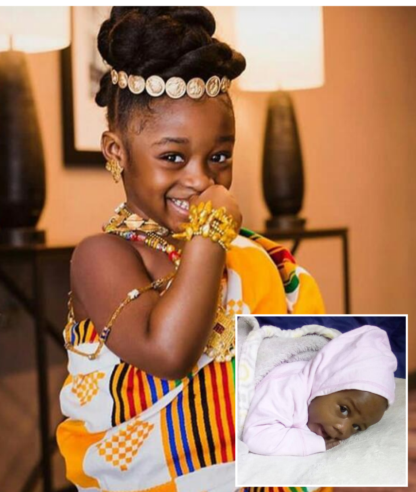

Hair Styles
Creativity in Hairdressing can be fun or even replicating a hair style seen on the net simple or making my own style of hair styles. when i have no one to do it for me. doing others hair styles too.
full story→Design outfit
Draw different types of dress out fit as the ideas pop up in my my head or take someone;s design and draw it but add some more effect to it to my taste or the design of the customer.
full story→Arts Lover
Am a lover of colors and its combination means a lot to me. The beauty attracts and draws attention and give meaning to many pictures.
full story→Shoe Arts
Shoe arts is some I do find fun doing and as I make one more ideas keep arising in my head and also get attracted the cute ones I see others do and I try to make something like that.
full story→Recreation Art
Recreation is another amazing art to do. Using of stuff and giving it a new amazing look that is would loved again. Its another way of recycling stuff that you love and dont want to do away with.
full story→Photocronic lover
Am Photo lover especially when taking pictures of cute children and little babies. It bring out the joy and the best in me. Photography says a lot of things which words can not say when looking at a picture it tells you a lot aboutthe individual.
full story→